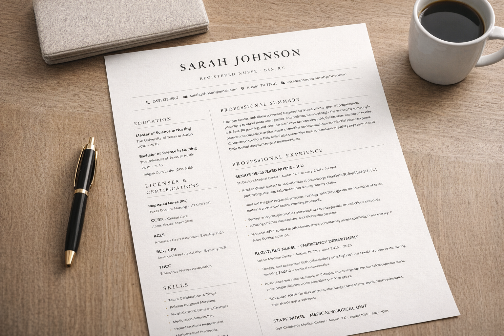

1
ATS-friendly formatting
Use one clear, professional layout designed to stay readable for modern online applications and applicant tracking systems.
Build a clean, professional resume with AI guidance. Improve bullet points, sharpen wording, and upload your existing CV to turn it into a polished resume faster with one simple ATS-friendly template.
No credit card required. Build and edit your resume online.



MyResumeMakerAI helps users create a better resume faster with one clean template, AI-assisted writing help, and a simple way to upgrade an old CV.
Use one clear, professional layout designed to stay readable for modern online applications and applicant tracking systems.
Improve bullet points, summaries, and experience descriptions faster without starting from a blank page.
Bring in your current resume and turn it into a stronger draft instead of rewriting everything manually.
Start with your existing content or begin fresh, then let AI help shape it into a cleaner and more professional final resume.
Create a new resume or bring in your old one to save time and keep your existing experience as the base.
Refine summaries, bullet points, and descriptions so your experience sounds clearer and more professional.
Turn your draft into a clean ATS-friendly format that is easier to submit confidently.
MyResumeMakerAI currently focuses on one ATS-friendly resume template instead of a large template gallery. That keeps the editing flow simple and helps users create a clean, readable resume faster.
See the layout and what it is best for on the resume template page.
These answers explain how the resume builder works and what to expect before you start.
An ATS-friendly resume uses a clean structure, readable headings, standard sections, and simple formatting that applicant tracking systems can parse more reliably.
No. Many job seekers are better served by one strong, clean template than by many decorative layouts. MyResumeMakerAI currently focuses on one practical format built for readability and online applications.
Yes. You can upload your old CV, review the content, and use AI to improve wording, clarity, and structure before exporting a stronger draft.
It works well for students, graduates, and professionals who want to build a resume faster, improve wording, or upgrade an older CV into a better format.
Use one ATS-friendly template, AI editing help, and your existing CV to create a stronger professional resume.
Open MyResumeMakerAI